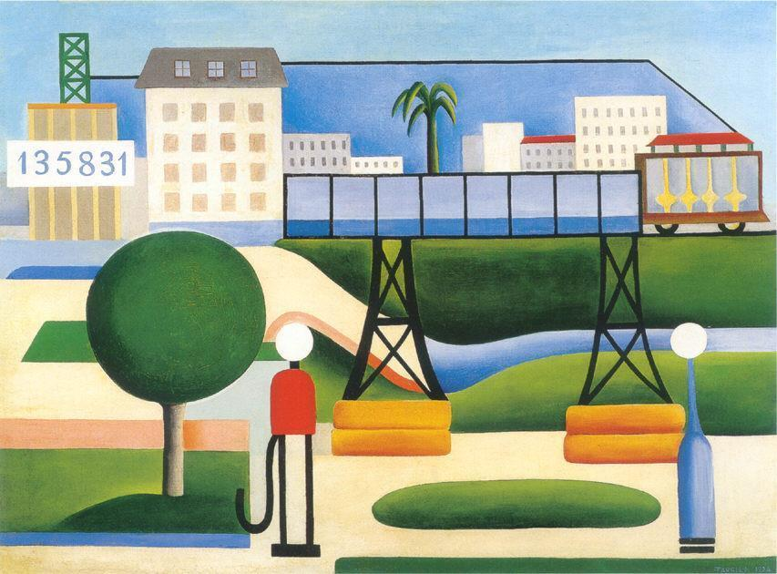
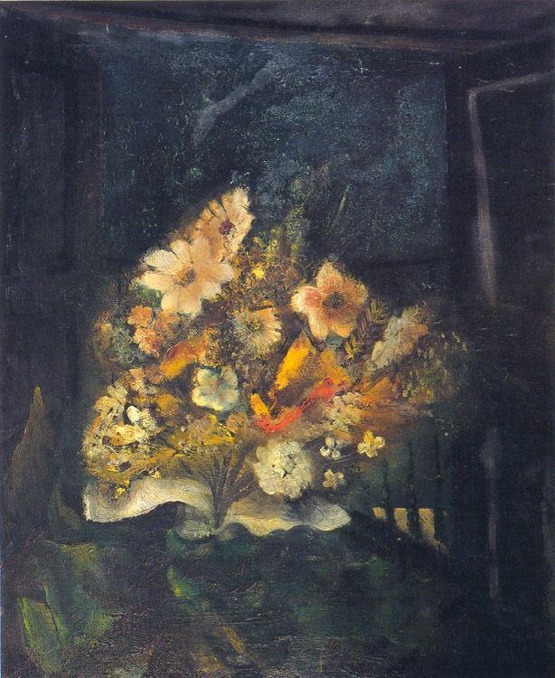
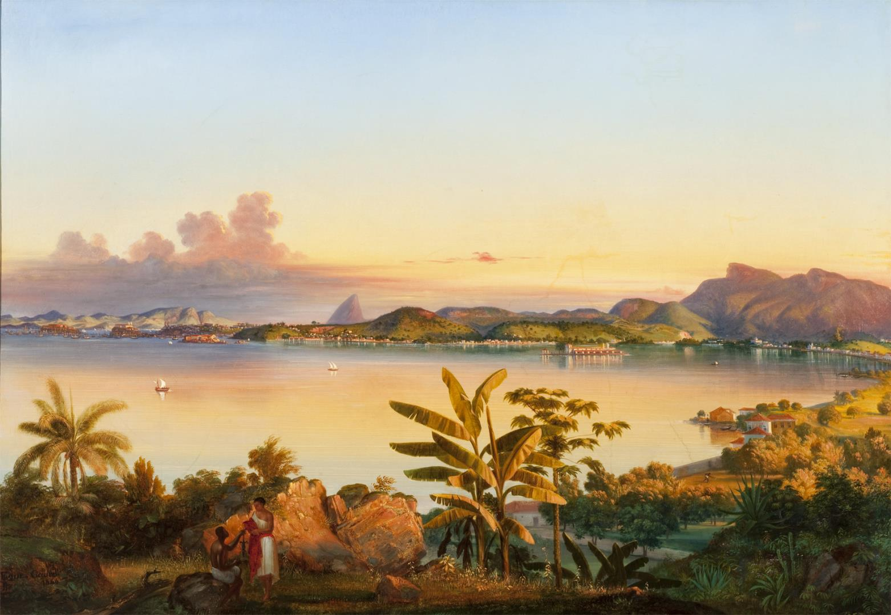
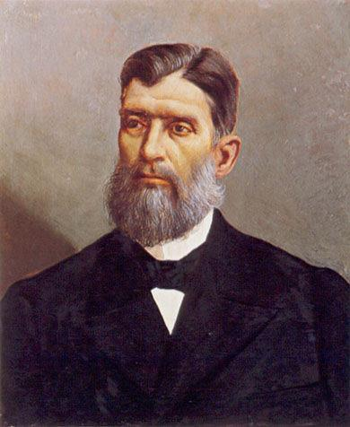
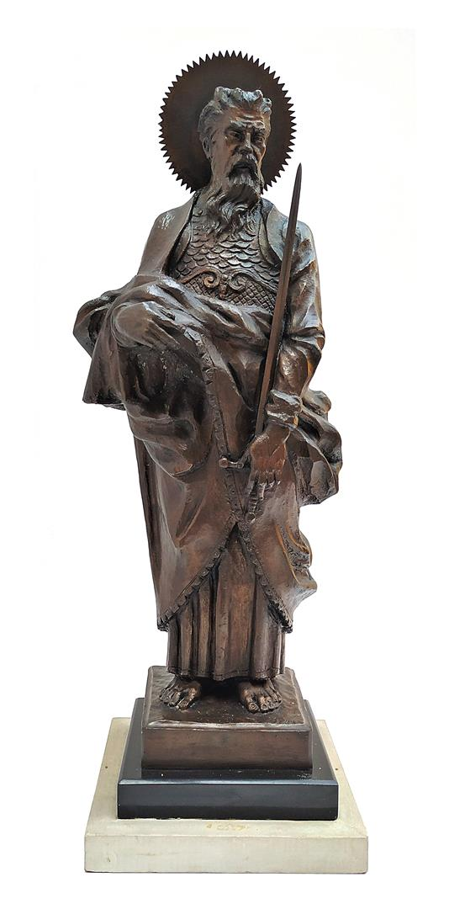
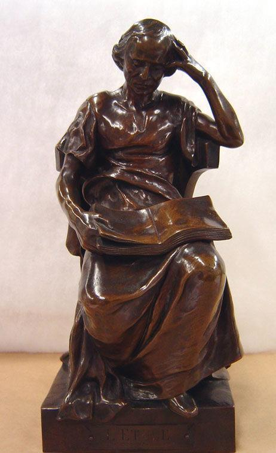
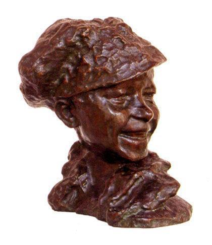
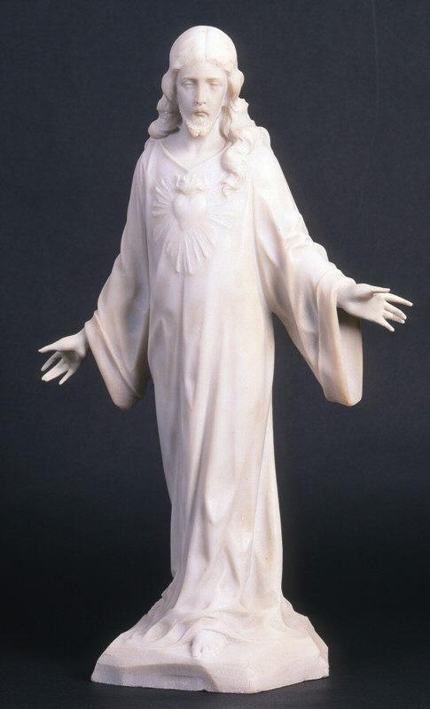
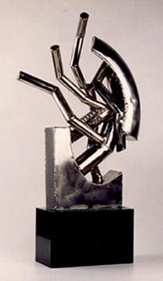

Acervo
Home
Acervo
História
Programação
Visita
O acervo original foi formado a partir da transferência de 20 obras do Museu Paulista da Universidade de São Paulo, justamente com outras 6 adquiridas de importantes artistas da cidade como Almeida Júnior, Pedro Alexandrino, Antônio Parreiras e Oscar Ferreira da Silva, especialmente para formar a nova coleção.
| Pinturas |
|  |
 |
 |
 |
| São Paulo (1924) |
Ramo de Flores (1931) |
Rio de Janeiro (1844) |
Maçãs e Metais (1934) |
| Tarsila do Amaral |
Di Cavalcanti |
Alessandro Ciccarelli |
Pedro Alexandrino |
Atualmente sua coleção conta com cerca de 11 mil peças, dentre as quais estão trabalhos de importantes artistas brasileiros como Anita Malfatti, Lygia Clark, Tarsila do Amaral, Almeida Júnior, Pedro Alexandrino, Candido Portinari, Oscar Pereira da Silva, entre outros.
| Esculturas |
|  |
 |
 |
 |
 |
| São Paulo militar (1940) |
O estudo (1873) |
O garoto de Paris (1884) |
Coração de Jesus (1928) |
Planta (1970) |
| Luiz Morrone |
Henri Louis Levasseur |
Medardo Rosso |
Giulio Starace |
Vlavianos |